전자산업기사 (2003-05-25 기출문제)
1과목: 전자회로
1. 다음과 같은 회로에서 다이오드는 순방향 저항이 20Ω이다. Vi의 실효치가 110 V 일 때 전류 i 의 최대치(peak값)는 약 얼마인가?
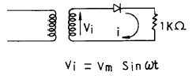
- 153 mA
- 87 mA
- 64 mA
- 42 mA
(정답률: 66%)

2. PNP 접합 트랜지스터를 사용한 증폭기에 있어서 베이스를 기준으로 한 컬렉터의 전위는 어떤 전위로 되는가?
- 부전위
- 영전위
- 정전위
- 동전위
(정답률: 64%)
3. 다음 중 미분회로는?
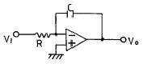
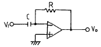
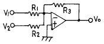
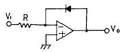
(정답률: 68%)
4. 이미터 전류를 1[mA] 변화시켰더니 컬렉터 전류는 0.94[mA] 변화하였다. 이 경우 전류 증폭율 읔는?
- 약 25
- 약 15.6
- 약 12.3
- 약 10.5
(정답률: 53%)
5. 다음 회로에서 궤환율(feed back factor) β 는?
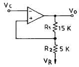
- 0.25
- 1
- -1
- 2.5
(정답률: 57%)
6. 2단 증폭기가 있다. 초단의 잡음지수 F1=10, 이득 G=10, 다음 단의 잡음지수 F2=11 일 때 종합 잡음지수는?
- 10
- 11
- 21
- 110
(정답률: 59%)
7. 정궤환 발진기의 바르크하우젠의 발진 조건(Barkhausen's oscillation criterion)은?
- β A = ∞
- β A = 0
- β A = -1
- β A ≪ 1
(정답률: 66%)
8. 그림과 같은 논리 회로의 출력 X는?
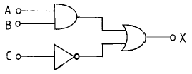
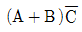
- ABC
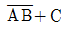
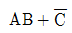
(정답률: 68%)
9. RS-FF의 입력 양단간에 inverter 회로를 접속하면 어떤 Flip-Flop의 동작을 하는가?
- D Flip-Flop
- T Flip-Flop
- M/S Flip-Flop
- RS Flip-Flop
(정답률: 56%)
10. 부궤환(負歸還)시 입력이 2[V] 일 때 출력이 10[V]라고 하면 무궤환(無歸還) 시는 입력이 0.2[V]로 동일 출력을 얻는다고 한다. 이 때의 궤환률 β 는?
- 0.08
- 0.18
- 1.2
- 1.8
(정답률: 40%)
11. 위상변조(PM)에 대한 설명 중 옳은 것은?
- 변조지수 mp는 신호의 진폭에 관계없다.
- 변조지수 mp는 신호의 주파수에는 관계없다.
- 최대 주파수 편이는 변조 주파수에 관계없다.
- 최대 주파수 편이는 변조 주파수에 반비례한다.
(정답률: 63%)
12. 불 대수의 정리 중 옳지 않은 것은?
- A+B=B+A
- A+B∙C=(A+B)(A+C)
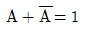
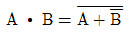
(정답률: 79%)
13. 이미터 폴로어는 어떠한 궤환 증폭기인가?
- 직렬전류 궤환
- 직렬전압 궤환
- 병렬전류 궤환
- 병렬전압 궤환
(정답률: 57%)
14. 이상적인 궤환 증폭기의 기본적 특성을 설명한 것 중 옳지 않은 것은?
- 기본 증폭기는 단방향적이어야 한다.
- 궤환 회로도 단방향적이어야 한다.
- 기본 증폭기에 대한 궤환 회로의 부하 작용은 무시되어야 한다.
- 기본 증폭기의 동작은 궤환 회로가 있을 때 이득이 커져야 한다.
(정답률: 35%)
15. J-K 플립플롭을 그림과 같이 결선하고, 클럭 펄스가 계속 인가되면 출력은 어떤 상태가 되는가?
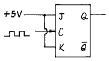
- Set
- Reset
- Toggling
- 동작 불능
(정답률: 74%)
16. 트랜지스터 직류 증폭기에 있어서 드리프트(drift)를 초래하는 주된 원인이 아닌 것은?
- hfe의 온도변화
- VBE의 온도변화
- hre의 온도변화
- Ico의 온도변화
(정답률: 49%)
17. 2진수 1110의 2의 보수는?
- 1010
- 0001
- 1101
- 0010
(정답률: 63%)
18. 다음 설명 중 옳은 것은?
- 변조 과정의 정보신호를 반송파, 낮은 주파수를 변조파라 한다.
- 수신측에서 정보를 갖는 신호를 추출하는 과정을 검파라고 한다.
- 낮은 주파수가 높은 주파수보다 다중화(Multiplexing)에 유리하다.
- 높은 주파수의 신호를 낮은 주파수로 이동시켜 전송하는 과정을 변조라고 한다.
(정답률: 34%)
19. 연산증폭기를 이용한 그림과 같은 회로의 출력으로 적당한 것은?
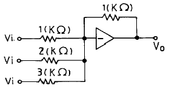
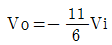
- Vo=6Vi
- Vo=-6Vi
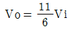
(정답률: 72%)
20. 전력 증폭기의 설명으로 옳은 것은?
- A급 증폭기는 Q점이 부하선의 중앙에 위치해야 최대 출력을 얻을 수 있다.
- B급 증폭기의 최대 효율은 10% 이하이다.
- C급 증폭기는 차단점 이상에서 바이어스 된다.
- C급 증폭기는 전력 손실이 많아 출력 전력이 적다.
(정답률: 57%)
2과목: 전기자기학 및 회로이론
21. 두 개의 저항 R1, R2를 직렬로 연결하면 16Ω, 병렬 연결하면 3.75Ω이 된다. 두 저항값은 각각 몇 Ω 인가?
- 4와 12
- 5와 11
- 6과 10
- 7과 9
(정답률: 59%)
22. 어떤 자기회로에서 자기인덕턴스는 권회수의 몇 승에 비례 하는가?
- 1/2
- 1
- 2
- 3
(정답률: 86%)
23. 비유전률 εs=9, 비투자율 μs=1인 공간에서의 특성임피던스는 몇 Ω 인가?
- 40π
- 100π
- 120π
- 150π
(정답률: 30%)
24. 전위분포가 V=6x+3[V]로 주어졌을 때 점(10,0)[m]에서의 전계의 크기[V/m] 및 방향은 어떻게 표현되는가?
- 6ax
- -6ax
- 3ax
- -3ax
(정답률: 75%)
25. 두 종류의 금속으로 폐회로를 만들어 전류를 흘리면 양접속점에서 한 쪽은 온도가 올라가고, 다른 쪽은 내려가는 현상은?
- 톰슨효과
- 제벡효과
- 펠티에효과
- 핀치효과
(정답률: 43%)
26. s/s2+9를 역 Lapalce 변환을 하면?
- sin9t
- sin3t
- cos3t
- cos9t
(정답률: 52%)
27. 최대값 Vm인 정현파 교류의 평균값은?
- 0
- Vm/√2
- √2Vm
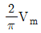
(정답률: 50%)
28. 다음과 같은 변압기의 합성 인덕턴스는 18[H]이다. 결합계수 k의 값은? (단, L1=2[H], L2=8[H]이다.)
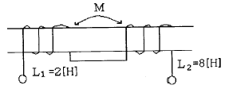
- 0.2
- 0.5
- 0.8
- 1
(정답률: 50%)
29. 맥스웰의 전자방정식의 적분형이다. 틀린 식은? (단, E 는 전계, D 는 전속밀도, H 는 자계, B 는 자속밀도, ρv는 공간전하밀도, m은 자기량이다.)
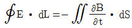
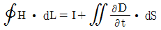
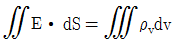
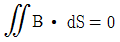
(정답률: 49%)
30. 유전률 ε1＞ε2인 두 유전체 경계면에 전속이 수직일 때, 경계면상의 작용력은?
- ε2의 유전체에서 ε1의 유전체 방향
- ε1의 유전체에서 ε2의 유전체 방향
- 전속밀도의 방향
- 전속밀도의 반대 방향
(정답률: 56%)
31. 정현 대칭(기함수)에서는 어느 함수식이 성립하는가?
- f(t)=f(t)
- f(t)=-f(t)
- f(t)=f(-t)
- f(t)=-f(-t)
(정답률: 63%)
32. 전달함수 G(s)=1/S+1 인 제어계의 인디셜 응답(indicial response)은?
- 1+e-t
- e-t
- 1-e-t
- e-t-1
(정답률: 81%)
33. 리액턴스 함수가 Z(s)=4s/s2+9로 표시되는 리액턴스 2단자망은?
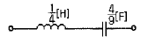
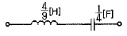
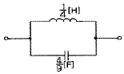
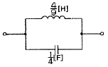
(정답률: 44%)
34. 특성 임피던스가 200[Ω ]인 무손실 전송선로의 수전단에 400[Ω]의 저항 부하를 연결하면, 선로의 전압 정재파비는?
- 1
- 1.5
- 2
- 3
(정답률: 74%)
35. 반지름 a[m]인 원형회로에 전류 I[A]가 흐르고 있을 때 원의 중심 0 에서의 자계의 세기는 몇 A/m 인가?
- 0
- I/2a
- I/2πa
- I/2πμoa
(정답률: 46%)
36. R-C 직렬 회로망에서 시정수를 가장 작게 할 수 있는 것은?
- R은 작게, C는 크게 한다.
- R은 크게, C는 작게 한다.
- R과 C를 작게 한다.
- R과 C를 크게 한다.
(정답률: 57%)
37. 다음 회로에 스위치를 닫는 순간에 이회로의 시정수(time constant) τ 는?
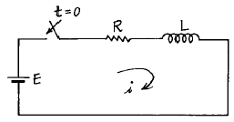
- τ=R/L
- τ=L/R
- τ=LR
- τ=1/LR
(정답률: 73%)
38. 그림과 같은 브리지(bridge)가 평형 상태를 유지하려면 L의 값은?
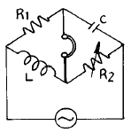
- L=R2/R1C
- L=CR1R2
- L=C/R1R2
- L=R1R2
(정답률: 58%)
39. 전기쌍극자로부터 거리 r[m]떨어진 점의 전위는?
- r에 비례한다.
- r에 반비례한다.
- r2에 반비례한다.
- r3에 반비례한다.
(정답률: 54%)
40. 반지름이 각각 a[m], b[m], c[m]인 독립 도체구가 있다. 이들 도체를 가는 선으로 연결하면 합성 정전용량은 몇 F 인가?
- 4πεo(a+b+c)
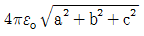
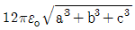
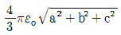
(정답률: 33%)
3과목: 전자계산기일반
41. 다음 ( )안에 알맞는 말은?
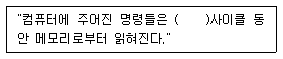
- 직접
- 간접
- fetch
- jindirect
(정답률: 86%)
42. 마이크로프로세서의 구성에 속하지 않는 것은?
- 연산 회로
- 제어 회로
- 각종 레지스터
- 증폭 회로
(정답률: 66%)
43. 마이크로컴퓨터의 입∙출력 구성 요소가 아닌 것은?
- 입∙출력 인터페이스
- 입∙출력 포트(port)
- 버스
- 디코더
(정답률: 73%)
44. 컴퓨터 내부에서 프로그램 처리 중 다음에 수행할 명령의 주소를 기억하고 있는 레지스터는?
- 명령 레지스터
- 프로그램 카운터
- 누산기
- 메모리 주소 레지스터
(정답률: 70%)
45. 어드레스 지정방식이 아닌 것은?
- 직접 어드레싱
- 이미디어트 어드레싱
- 간접 어드레싱
- 임시 어드레싱
(정답률: 80%)
46. 특정의 비트 또는 특정의 문자를 삭제하기 위해 가장 필요한 연산은?
- OR 연산
- MOVE 연산
- COMPLEMENT 연산
- AND 연산
(정답률: 79%)
47. 기억된 내용의 일부로 그 데이터의 위치를 찾는 특성을 가진 기억장치는?
- 연관 기억 장치
- 캐시 기억 장치
- 가상 기억 장치
- 고속 기억 장치
(정답률: 52%)
48. 마이크로컴퓨터의 입∙출력 인터페이스 회로는 버스 접속방식을 사용하여 구성된다. 이 버스에 많은 입∙출력장치의 접속을 가능하게 할 수 있는 소자는?
- 삼상 버퍼(tri-state buffer)
- 모뎀(modem)
- 리플레시(refresh) 회로
- 데이지체인(daisy chain)
(정답률: 62%)
49. 음수를 표현하는 방법이 아닌 것은?
- 부호와 절대치
- 부호와 1의 보수
- 부호와 2의 보수
- 부호와 정보코드
(정답률: 62%)
50.
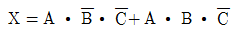
를 간략화 하면?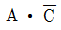
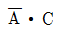
- A∙C
- A∙B
(정답률: 55%)
51. 다음의 흐름도 기호(flow-chart symbol)는?
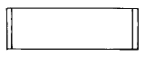
- 병렬 형태(parallel mode)
- 의사결정(decision)
- 준비(preparation)
- 정의된 처리(predefined process)
(정답률: 71%)
52. 선형 리스트(linear list) 가운데서 가장 먼저 삽입된 데이터가 가장 먼저 삭제되는 리스트는?
- 트리(tree)
- 스택(stack)
- 데크(deque)
- 큐(queue)
(정답률: 47%)
53. 연산 처리결과를 항상 누산기(accumulator)에 기억시키는 명령 형식은?
- 0 주소 명령형식
- 1 주소 명령형식
- 2 주소 명령형식
- 3 주소 명령형식
(정답률: 49%)
54. CPU에서 micro-operation이 순서적으로 진행되도록 하는데 필요한 것은?
- 프로그램 카운터
- 프로그램 상태어(PSW)
- 제어 신호(control signal)
- 어큐뮬레이터(accumulator)
(정답률: 52%)
55. 컴퓨터에서 프로그램 수행 중에 정전 등의 예기치 않은 사태가 발생했을 때 컴퓨터의 내부의 상태나 프로그램의 상태를 보존하기 위해 사용되는 것은?
- 인터럽트
- 서브루틴
- 스택
- 어드레싱
(정답률: 64%)
56. 입력 번지선이 8개, 출력 데이터 선이 8개인 ROM의 기억 용량은 몇 바이트(byte)인가?
- 64
- 256
- 512
- 1024
(정답률: 76%)
57. 누산기나 레지스터에 있는 내용을 지정된 메모리 주소로 옮기는 명령은?
- Transfer 명령
- Load 명령
- Store 명령
- Fetch 명령
(정답률: 68%)
58. 스태틱(static) RAM에 비해 다이나믹(dynamic) RAM의 특징이 아닌 것은?
- 가격이 저렴하다.
- 전력 소모가 적다.
- 동작 속도가 빠르다.
- 단위 면적당 기억용량이 크다.
(정답률: 57%)
59. 다음 채널 제어기에 대한 설명 중 옳은 것은?
- 하나의 입∙출력 명령에 의하여 여러 블럭의 자료를 입∙출력할 수 있다.
- 중앙처리장치와 마찬가지로 주기억장치에 있는 명령을 수행하는 기능은 있으나 주기억장치에 접근할 수 없다.
- 하나의 입∙출력 명령으로 한 블럭의 자료만 입∙출력할 수 있다.
- 채널과 중앙처리장치는 동시 동작이 불가능 하므로 중앙처리장치는 입∙출력을 위해 많은 시간이 소비된다.
(정답률: 77%)
60. 순서도(flowchart)에 대한 설명으로 옳지 않은 것은?
- 프로그램 작성이 용이하다.
- 프로그램 수정이 용이하다.
- 프로그램의 기초 자료가 된다.
- 프로그램의 전체 구성과 관계를 파악하는데 어려움이 있다.
(정답률: 79%)
4과목: 전자계측
61. 그림의 발진기에서 발진 주파수를 낮추기 위한 방법은?
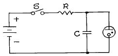
- R 증가 C 감소
- R 감소 C 증가
- RC의 감소
- RC의 증가
(정답률: 58%)
62. 싱크로스코프로서 직접 측정할 수 없는 것은?
- 위상
- 전압파형
- 주파수
- 회전수
(정답률: 79%)
63. 기록 계기의 기록 방법 중 해당되지 않는 것은?
- 연동식
- 직동식
- 타점식
- 자동평형식
(정답률: 31%)
64. 수신기의 감도 측정에 별로 필요성이 없는 것은?
- 저주파 발진기
- 의사 공중선
- 신호 감쇠기
- 표준신호발생기
(정답률: 57%)
65. 최대 눈금 300[V]인 0.2급 전압계로 전압을 측정하였더니 지시가 100[V]였다. 상대오차는?
- 0.2[%]
- 0.4[%]
- 0.6[%]
- 0.8[%]
(정답률: 70%)
66. 잡음지수 F는? (단, Si : 입력신호, Ni : 입력잡음, So : 출력신호, No : 출력잡음)
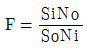
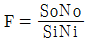
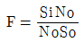
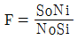
(정답률: 78%)
67. Q-meter에 사용하는 전류계는 무슨 형의 전류계를 사용하는가?
- 열전대형
- 가동철편형
- 전류력계형
- 유도형
(정답률: 68%)
68. 캠벨 브리지로 측정할 수 없는 것은?
- 정전용량
- 주파수
- 상호 인덕턴스
- 철손
(정답률: 22%)
69. 오실로스코프에서 제어 그리드 전압을 변화시키면 무엇이 조정되는가?
- 초점
- 휘도
- 수평 위치
- 수직 위치
(정답률: 65%)
70. 500[mV],10[Ω]의 전압계에 590[Ω]의 배율기를 결합하면 몇 [V]까지 측정되는가?
- 10
- 20
- 30
- 40
(정답률: 38%)
71. 초단파대에서 사용되는 감쇠기는?
- 저항 감쇠기
- 리액턴스 감쇠기
- 기계적 감쇠기
- L형 감쇠기
(정답률: 62%)
72. 오실로스코프와 조합하여 FM 수신기의 주파수 변별기 등 각종 고주파 회로의 주파수 특성 및 대역 조정에 이용되는 발진기는?
- CR 발진기
- 음차 발진기
- 비트(beat) 발진기
- 소인(sweep) 발진기
(정답률: 77%)
73. 전자기기의 불요 복사 특성을 측정하고자 한다. 필요하지 않은 측정기는?
- 스펙트럼 아날라이저(Frequency spectrum Analizer)
- 표준 다이폴 안테나
- 전계 강도계
- 시그널 제너레이터(signal Generator)
(정답률: 45%)
74. 다음 그림은 오실로스코프로 위상을 측정하는 그림이다. 출력 파형이 그림과 같은 리셔쥬 도형일 때 위상 측정식으로 옳은 것은?
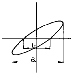
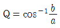
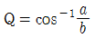
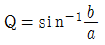
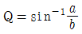
(정답률: 79%)
75. 기록 계기에 관한 설명 중 옳지 않은 것은?
- 변화하는 값을 긴 시간동안 연속 측정하여 기록하는 계기
- 펜식, 타점식, 자동평형식 등이 있다.
- 변화하지 않는 값을 단시간에 측정하고 기록에 남기지 않는 계기이다.
- 펜식은 1.5급, 타점식은 1.0급, 자동평형식은 0.5급 정도이다.
(정답률: 73%)
76. 직류에서부터 단파대 이하까지의 낮은 주파수에서 사용되는 감쇠기는?
- 리액턴스 감쇠기
- 기계적 필터
- L형 감쇠기
- 저항 감쇠기
(정답률: 80%)
77. 그림과 같은 브리지에서 평형 되었을 때 C1의 값은? (단, R1=200Ω, R2=100Ω, C2=1㎌)
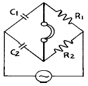
- 0.5㎌
- 2㎌
- 5㎌
- 50㎌
(정답률: 59%)
78. 직류 전류 측정에 가장 적합하며, 균등 눈금인 계기는?
- 가동코일형
- 가동철편형
- 전류력계형
- 열선형
(정답률: 48%)
79. 원격 측정의 전송 방식 중 펄스 시한법의 설명으로 옳지 않은 것은?
- 전송 선로의 상태가 다소 변하면 오차가 생긴다.
- 송량측에서 피측정량에 대응하여 신호 전류의 단속 시간을 바꾸는 방식이다.
- 펄스의 크기에는 관계가 없다.
- 신호의 단속 시간을 바르게 전송해야 한다.
(정답률: 38%)
80. 다음은 빈 브리지(Win Bridge)의 회로도이다. 브리지가 평형이 될 때 전원의 주파수 f는 몇 [Hz]인가? (단, T는 수화기이고, R1=R2=R, C1=C2=C라 한다.)
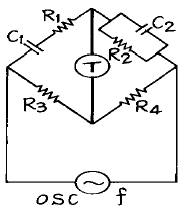
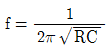
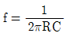
(정답률: 58%)